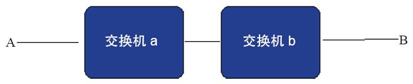

5.5 呼叫相关概念
本节我们再来复习一下第3章的内容，FreeSWITCH是一个B2BUA，我们还是以图3-2为例。
如果Bob与Alice通话，典型的呼叫流程主要有以下两种：
·Bob向FreeSWITCH发起呼叫，FreeSWITCH接着启动另一个UA呼叫Alice，两者通话。
·FreeSWITCH同时呼叫Bob和Alice，两者接电话后FreeSWITCH将a-leg和b-leg桥接（bridge）到一起，两者通话。
其中第二种流程还有一种变种。例如，市场上有人利用上、下行通话的不对称性卖电话回拨卡获取利润。比方说，他们可以把FreeSWITCH作为服务器，把回拨卡卖给Bob。Bob按回拨卡上的号码呼叫FreeSWITCH，FreeSWITCH不应答，而是在获得Bob的主叫号码后直接挂机。然后FreeSWITCH回拨Bob，Bob接听后FreeSWITCH启动一个IVR程序指示Bob输入Alice的号码。最后FreeSWITCH再呼叫Alice [1] 。
在实际应用中，由于涉及回铃音、呼叫失败等，情况可能要复杂得多。在此我们就不深入讨论了，而是针对简单的呼叫流程介绍一下与呼叫相关的基本概念。
5.5.1 来去话、Session、Channel与Call
在前面所说的第一种呼叫流程中，Bob到FreeSWITCH的通话称为来话（注意，在这里我们都是针对FreeSWITCH来说的），而FreeSWITCH作为一个B2BUA再去呼叫Alice时，就称为去话。显而易见，在第二种呼叫流程中两路通话（两个leg）都是去话。
无论来话还是去话，对每一次呼叫，FreeSWITCH都会启动一个Session（会话，它包含SIP会话，SIP会在每对UAC-UAS之间生成一个SIP Session），用于控制整个呼叫，它会一直持续到通话结束。其中，每个Session都控制着一个Channel（通道，又称信道），Channel是一对UA间通信的实体，相当于FreeSWITCH的一条腿（leg），每个Channel都用一个唯一的UUID来标识，称为Channel UUID。另外，Channel上可以绑定一些呼叫参数，称为Channel Variable（通道变量）。Channel中可能包含媒体（音频或视频流），也可能不包含。通话时，FreeSWITCH的作用是将两个Channel（a-leg和b-leg，通常先创建的或占主动的叫a-leg）桥接（bridge）到一起，使双方可以通话。这两路桥接的通话（两条腿）在逻辑上组成一个通话，称为一个Call。
在通话中，媒体（音频或视频）数据流在RTP包中传送。一般来说，Channel是双向的，因此媒体流会有发送（Send/Write）和接收（Receive/Read）两个方向。
5.5.2 回铃音与Early Media
为了便于说明，我们假定A与B不在同一台交换机（服务器）上（如在PSTN通话中可能不在同一座城市），中间需要经过两台交换机中转，如图5-2所示。

图5-2 A与B通过两台交换机通话
假设图5-2所示是在PSTN网络中，A呼叫B，B话机开始振铃，A端可听到回铃音（Ring Back Tone）。在早期，B端所在的交换机b只向A端交换机a传送地址全（ACM）信号，证明呼叫是可以到达B的，A端听到的回铃音的铃流是由A端所在的交换机生成并发送的。但后来，为了在A端能听到B端特殊的回铃音（如“您拨打的电话正在通话中…”或“对方暂时不方便接听您的电话”尤其是现代交换机，支持各种个性化的彩铃 [2] ），回铃音只能由B端交换机发送。在B接听电话前，回铃音和彩铃是不收费的（不收取主叫A的本次通话费。彩铃费用一般是在被叫端即B端以月租或套餐形式收取的）。这些回铃音就称为Early Media（早期媒体）。在SIP通信中，它是由SIP的183（带有SDP）消息描述的。
理论上讲，B接听电话后交换机b可以一直不向交换机a发送应答消息，而是将真正的话音数据伪装成Early Media，以实现“免费通话”。但这种应用是有限制的，大多数交换机允许Early Media的时间不会太长，如1分钟，以防止不守规则的人进行免费通话。
5.5.3 全局变量与局部变量
在5.3.2节我们讲到，可以使用X-PRE-PROCESS在FreeSWITCH中设置一些变量（包括自动生成的变量），在后续使用时可以用$${var}的形式来进行引用。这些变量是全局有效的，因而称为全局变量。另外一些变量是在Dialplan、Application或Directory中设置的，它们会影响呼叫流程且可以被动态改变。这些变量一般与一个呼叫有关，严格地说是与一个Channel有关，因而又称为Channel Variable，即通道变量。通道变量可以以${var}的形式引用。全局变量仅在预处理阶段（系统启动时或重新装载-reloadxml时）被求值，一般用于设置一些系统一旦启动就不会轻易改变的量，如$${domain}或$${local_ip_v4}等。而局部变量（即通道变量）仅在Channel的生命周期中有效。所以，两者最大的区别是，$${var}只在加载时求值一次 [3] ，而${var}则在每次执行时都求值（如一个新电话进来时）。
在呼叫过程中，某些变量可以改变Channel的行为。另外，也可以使用自定义的通道变量来存储随路数据等。
在实际使用中会发现，有些变量在显示时（可以使用dp_tools中的info App显示，后面会讲到）是以variable_开头的，但在实际引用时要去掉这些开头的variable_。如variable_username，引用时要使用${username}。我们将在下一章深入讨论通道变量。
[1] 在整个过程中，Bob和Alice的电话都不会被扣费，费用将在回拨卡账号上扣除，通常会比Bob直接呼叫Alice便宜。这种方法比较复杂，用户体验也不好，故我们不赞成这种做法。在此只是举一个例子，说明FreeSWITCH可以这样用。
[2] 彩铃称为CRBT，即Color Ring Back Tone。
[3] 如果更改XML配置文件中的全局变量，一般需要重新启动才能重新加载。在UNIX类系统上，也可以向FreeSWITCH发送HUP信号让它重新加载和解析全局的配置文件，实现命令是kill-HUP<FreeSWITCH的pid>。